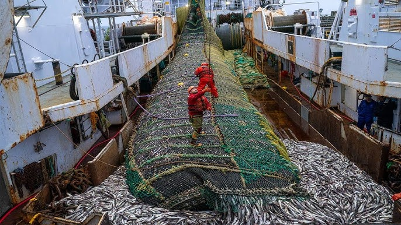
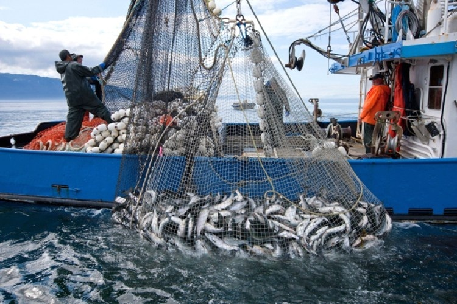

What Is Overfishing?
Overfishing occurs when fish are caught at a faster rate than they can reproduce. This leads to a decline in fish populations, which affects not only marine biodiversity but also the global seafood industry. With advanced fishing technologies, fleets can capture enormous amounts of fish, often leaving little time for species to recover.


The Devastating Impact on Marine Life
Bycatch – The Unintended Victims